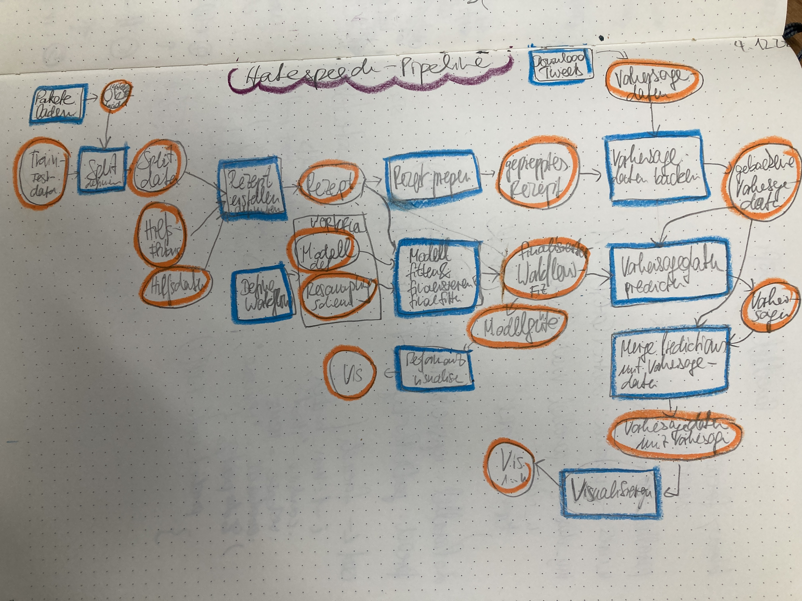

library(targets)
# Funktionen einlesen:
#purrr::walk(list.files(path = "funs", pattern = ".R", full.names = TRUE), source)
source("funs/def-recipe.R")
source("funs/read-train-data.R")
source("funs/read-test-data.R")
# Optionen, z.B. allgemein verfügbare Pakete in den Targets:tar_option_set(packages = c("readr",
"dplyr",
"ggplot2",
"purrr",
"easystats",
"tidymodels",
"textrecipes"))
# Definition der Pipeline:
list(
tar_target(data_train, read_train_data()),
tar_target(data_test, read_test_data()),
tar_target(recipe1, def_recipe(data_train)
),
tar_target(model1,
logistic_reg(penalty = tune(), mixture = 1) %>%
set_mode("classification") %>%
set_engine("glmnet")
),
tar_target(workflow1,
workflow() %>% add_recipe(recipe1) %>% add_model(model1)
),
tar_target(grid1,
grid_regular(penalty(), levels = 3)
),
tar_target(grid_fitted,
tune_grid(workflow1,
resamples = vfold_cv(data_train, v = 2),
grid = grid1)
),
tar_target(best_hyperparams,
select_by_one_std_err(grid_fitted, metric = "roc_auc", penalty)
),
tar_target(fit1,
workflow1 %>% finalize_workflow(best_hyperparams) %>% fit(data_train)),
tar_target(preds,
fit1 %>%
predict(data_test) %>%
bind_cols(data_test) %>%
mutate(c1 = factor(c1))),
tar_target(metrics1,
preds %>% metrics(truth = c1, .pred_class))
)14 Projektmanagement
14.1 Pipeline-Management
14.1.1 Am Anfang
Sie haben Großes vor! Naja, zumindest planen Sie ein neues Data-Science-Projekt.
Und, schlau wie Sie sind, stürzen Sie nicht sofort an die Tastatur, um sich einige Modelle berechnen zu lassen. Nein! Sie denken erst einmal nach. Zum Beispiel, wie die einzelnen Analyseschritte aussehen, worin sie bestehen, und in welcher Abfolge sie zu berechnen sind, s. Abbildung 14.1.

Hinweis
Den Graph der einzelnen Analyseschritte in ihrer Abhängigkeit bezeichnet man als *Pipeline.
14.1.2 Sie träumen von einem Werkzeug
Nach einiger Zeit überlegen Sie sich, dass Sie ein System bräuchten, das Ihre Skizze umsetzt in tatsächliche Berechnungen. Und zwar suchen Sie ein Projektmanagement-System das folgendes Desiderata erfüllt:
- Es führt die einzelnen Schritte Ihres Projekt, die “Pipeline” in der richtigen Reihenfolge
- Es aktualisiert veraltete Objekte, aber es berechnet nicht Modelle neu, die unverändert sind
- Es ist gut zu debuggen
Ja, von so einem Werkzeug träumen Sie.
Und tatsächlich, Ihr Traum geht in Erfüllung. Dieses System existiert. Genau genommen gibt es viele Systeme, die sich anschicken, Ihre Wünsche zu erfüllen. Wir schauen uns eines näher an, das speziell für R gemacht ist. Das R-Paket targets.
14.1.3 Targets
Es lohnt sich, an dieser Stelle den “Walkthrough” aus dem Benutzerhandbuch von Targets durchzuarbeiten.
Für ein Projekt ähnlich zu den, die wir in diesem Buch bearbeiten, ist folgende _targets.R-Datei ein guter Start.
Dann kann man auf den Play-Button drücken und die ganze Pipeline wird berechnet:
tar_make()Wenn die Pipeline aktuell ist, und nichts berechnet werden muss (und daher auch schon fehlerfrei durchgelaufen ist), sieht die Ausgabe so aus:
✔ skip target grid1
✔ skip target model1
✔ skip target data_train
✔ skip target data_test
✔ skip target recipe1
✔ skip target workflow1
✔ skip target grid_fitted
✔ skip target best_hyperparams
✔ skip target fit1
✔ skip target preds
✔ skip target metrics1
✔ skip pipeline [0.121 seconds]Die Pipeline kann man sich als DAG bzw. als Abhängigkeitsgraph visualisieren lassen:
tar_visnetwork()
Einzelne Objekte kann man sich komfortabel anschauen mit tar_load(objekt), z.B. tar_load(fit1) usw.
14.1.4 Eine Pipeline als Spielwiese
Dieses Github-Repo stellt Ihnen eine “Spielwiese” zur Verfügung, wo Sie sich mit Pipleines à la Targets vertraut machen können.
14.2 Zeit sparen
Einer Maschine etwas beizubringen kann dauern … Ein einfaches Rechenbeispiel dazu:
- Sie haben eine Kreuzvalidierung mit 10 Faltungen
- und 3 Wiederholungen
- und 3 Tuningparameter
- mit je 10 Werten
Das sind 1033*10=900 Wiederholungen.
Leider haben Sie noch in den ersten 10 Versuchen jeweils einen Bug, so dass sich die Rechenzeit noch einmal um den Faktor 10 erhöht…
Die Rechenzeit kann also schnell ins astronomische steigen. Es braucht also Methoden, um Rechenzeit zu sparen.1 Einige Methoden zum Rechenzeit sparen sind:
- Cloud: Cloud-Dienste in Anspruch nehmen (faktisch mietet man damit schnelle Rechner)
- Parallelisierung: Mehrere Kerne des eigenen Computers nutzen
- Upgrade: Kaufen Sie sich einen schnelleren Rechner…
- Cleveres Grid-Search: Methoden wie ANOVA Racing können die Rechenzeit - was das Tuning - betrifft - deutlich verringern.
Dieser Post gibt einen Überblick zu Rechenzeiten bei verschiedenen Tuningparameter-Optionen mit Tidymodels.
Natürlich ist die (mit Abstand) beste Methode: guten Code schreiben. Denn “guter Code” verringert die Wahrscheinlichkeit von Bugs, und damit die Gefahr, dass die ganze schöne Rechenzeit für die Katz war.
“Guter Code” ist vielleicht primär von zwei Dingen abhängig: erstens einen guten Plan zu haben bevor man das Programmieren anfängt und zweitens gute Methoden des Projektmanagements. Hunt und Thomas (2000) präsentieren eine weithin anerkannte Umsetzung, was “guter” Code bedeuten könnte.
14.3 Publizieren
Sie haben eine super Analyse geschrieben, eine schicke Pipeline, und jetzt soll die Welt davon erfahren? Es gibt einige komfortable Möglichkeiten, Ihre Arbeit zu publizieren, z.B. als Blog mit Quarto.
Dieses Video zeigt Ihnen wie man einen Quarto-Blog in RStudio erstellt und ihn bei Netlify publiziert.
Das Hosten bzw. Deployen bei Netlify ist kostenlos (in der Basis-Variante).
Sie können alternativ Github Pages als Hosting-Dienst verwenden. Dieses Video gibt dazu eine Anleitung.
14.4 Komplexitätsmanagement
Programmieren ist faszinierend. Vor allem, wenn das Programm funktioniert. Genau genommen ist es eigentlich nur dann faszinierend, ansonsten wird es anstrengend? aufregend? süchtig? faszinierend? nervig? Wie auch immer: Bugs treten auf und mit steigender Komplexität Ihrer Software steigen die Bugs nicht linear, sondern eher quadratisch oder gar exponentiell an.
Es gibt viele Ansätze, sich gegen die Komplexität zu “wehren”. Der beste ist vielleicht: Die Software so einfach wie möglich zu halten - und nur so komplex wie nötig. Sozusagen: Das beste Feature ist das, das Sie nicht implementieren.
14.4.1 Geben Sie gute Namen
Daraus leitet sich ab, dass die zentralen Methoden, um der Fehler Herr zu werden im Komplexitätsmanagement liegen. Den Variablen (Objekten) gute, “sprechende” aber prägnante Namen zu geben, ist in diesem Lichte auch als Komplexitätsmanagement (Reduktion) zu verstehen.
Ein typischer Fehler, der mir immer mal wieder passiert, ist: Ich ändere den Namen eines Objekts, aber vergesse, an allen Stellen im Code den Namen anzupassen. Glücklicherweise gibt es hier eine einfache Abhilfe: Replace-All.
14.4.2 Portionieren
Eine andere, zentrale Maßnahme ist es, den Code in handlichen “Häppchen” zu verpacken. Statt einer Skriptdatei mit zich Tausend Zeilen, wünschen Sie sich doch sicher ein Skript der Art:
mache_1()
mache_2()
mache_3()
gratuliere_fertig()Schaut man dann in mache_1() rein, sieht man wiederum übersichtlichen Code.
Funktionales Programmieren ist eine Umsetzung davon: Jedes Häppchen, jeder Schritt ist eine Funktion. Eine Funktion hat Input und Output; der Output ist dann der Input für die Funktion des nächsten Schrittes. targets ist eine Umsetzung dieser Idee.
14.4.3 Debugging mit einem Logger
Wenn das Kind in dem Brunnen gefallen ist, hilft nur Heulen und Wehklagen Das Problem finden und lösen. Mit einem Logger kann man sich das Entwanzen, das Finden der Fehler, erleichtern. Ein Logger schreibt Zwischenschritte in eine Log-Datei.
Hier ist ein Beispiel mit dem futile Logger:. Mein Problem war, dass ich eine dynamische Aufgabe für eine Statistik-Klausur programmiert hatte, aber leider gab es einen Bug, den ich nicht gefunden habe2.
Die Lösung brachte ein Logger, mit dem ich den Wert zentraler Variablen im Verlauf des Durchlaufens des Codes - bis eben der Laufzeitfehler aufkam3.
Hier ist ein Ausschnitt der Syntax. Zuerst initialisiert man den Logger mit einer Datei, hier exams.log. Neue Logging-Inhalte sollen an die bestehenden Logs angehängt werden (appender).
library(futile.logger)
flog.appender(appender.file("/Users/sebastiansaueruser/github-repos/rexams-exams/exams.log"))Dann gebe ich eine Loggings vom Typ “Info” zum Protokoll:
Die Ergebnisse kann man dann in der Logging-Datei anschauen:
NFO [2023-01-05 11:27:51] Rhats: 1.004503053029
INFO [2023-01-05 11:27:51] Sol: 0.18
INFO [2023-01-05 11:27:51] Sol typeof: double
INFO [2023-01-05 11:27:52] Ex: post-uncertainty1
INFO [2023-01-05 11:27:52] Data set: tips
INFO [2023-01-05 11:27:52] Preds chosen: size, total_bill
INFO [2023-01-05 11:27:52] Output var: tip
INFO [2023-01-05 11:27:53] Rhats: 0.999004883794722
INFO [2023-01-05 11:27:53] Rhats: 1.00021605674421
INFO [2023-01-05 11:27:53] Rhats: 1.00091357638756
INFO [2023-01-05 11:27:53] Sol: 0.32
INFO [2023-01-05 11:27:53] Sol typeof: double
INFO [2023-01-05 11:27:54] Ex: post-uncertainty1
INFO [2023-01-05 11:27:54] Data set: TeachingRatings
INFO [2023-01-05 11:27:54] Preds chosen: prof, beauty
INFO [2023-01-05 11:27:54] Output var: eval
INFO [2023-01-05 11:27:55] Rhats: 0.999060308710712
INFO [2023-01-05 11:27:55] Rhats: 0.999032305267221
INFO [2023-01-05 11:27:55] Rhats: 0.999229003550072
INFO [2023-01-05 11:27:55] Sol: 0
INFO [2023-01-05 11:27:55] Sol typeof: double
INFO [2023-01-05 11:27:56] Ex: post-uncertainty1
INFO [2023-01-05 11:27:56] Data set: gtcars
INFO [2023-01-05 11:27:56] Preds chosen: mpg_c, year
INFO [2023-01-05 11:27:56] Output var: msrp
INFO [2023-01-05 11:28:00] Rhats: 0.99913061005524
INFO [2023-01-05 11:28:00] Rhats: 0.998999786100339
INFO [2023-01-05 11:28:00] Rhats: 0.999130286784586
INFO [2023-01-05 11:28:01] Sol: 21959.35
INFO [2023-01-05 11:28:01] Sol typeof: doubleJa, das sieht nicht schön aus. Aber es brachte mir die Lösung: Mir fiel auf, dass der Fehler nur auftrat, wenn sol einen großen Wert hatte (1000 oder mehr). Danke, Logger!
Allerdings haben lange Rechenzeiten auch Vorteile, wie dieses XKCD-Cartoon zeigt.↩︎
StackOverflow hat mich dann gerettet↩︎
ERROR!↩︎